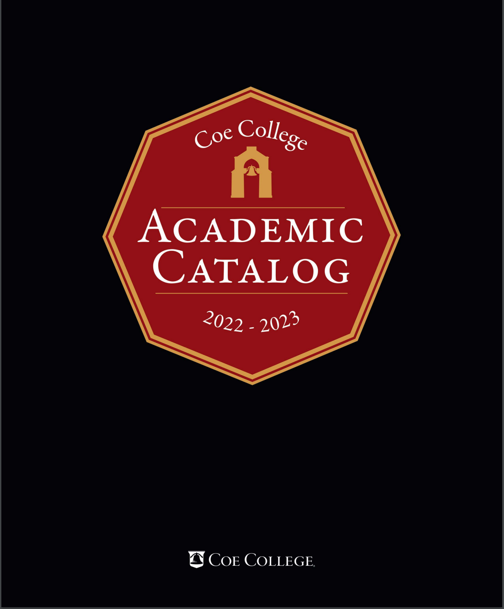

Course Catalog 2022-2023
PREFACE

Non-Discrimination
Coe College does not discriminate on the basis of race, color, ethnicity, age, religion, national origin, sexual orientation, gender identity, sex, marital status, disability, or status as a U.S. Veteran. All students have equal access to the facilities, financial aid, and programs of the College.
Higher Education Opportunity Act (HEOA)
The College complies with Readmission Requirements for Service Members as outlined in the Higher Education Opportunity Act section 487. This applies to active duty in the Armed Forces, whether voluntary or involuntary, including service as a member of the National Guard or Reserve, for a period of more than 30 days under a call or order to active duty.
The HEOA provides that a prompt readmission of a previously enrolled or admitted student may not be denied to a service member of the uniformed services for reasons relating to that service. In addition, a student who is readmitted under this section must be readmitted with the same academic status as the student had when they attended the college.
Equal Opportunity in Employment
Coe College is an equal opportunity employer in the recruitment and hiring of faculty and staff.
Family Educational Rights and Privacy Act (FERPA)
The provisions of the Family Educational Rights and Privacy Act (FERPA) prohibit the College from releasing grades or other information about academic standing to parents unless the student has released such information in writing. Further information concerning Coe College procedures in compliance with FERPA is available in the Office of the Registrar and included in 23 STUDENT NOTIFICATION OF RIGHTS UNDER FERPA of this catalog.
Solomon Amendment of 1997
Pursuant to the regulations of the Solomon Amendment of 1997, Coe College is required to make student recruiting information available to military recruiters who request it.
Reservation of the Right to Modify
The provisions of this catalog are to be considered directive in character and not as an irrevocable contract between the student and the College. The College reserves the right to make changes that seem necessary or desirable, including course and program cancellations. Responsibility for understanding and meeting graduation requirements as stated in the Coe College Catalog rests entirely with the student. Faculty advisors and the Registrar will assist in every way possible.